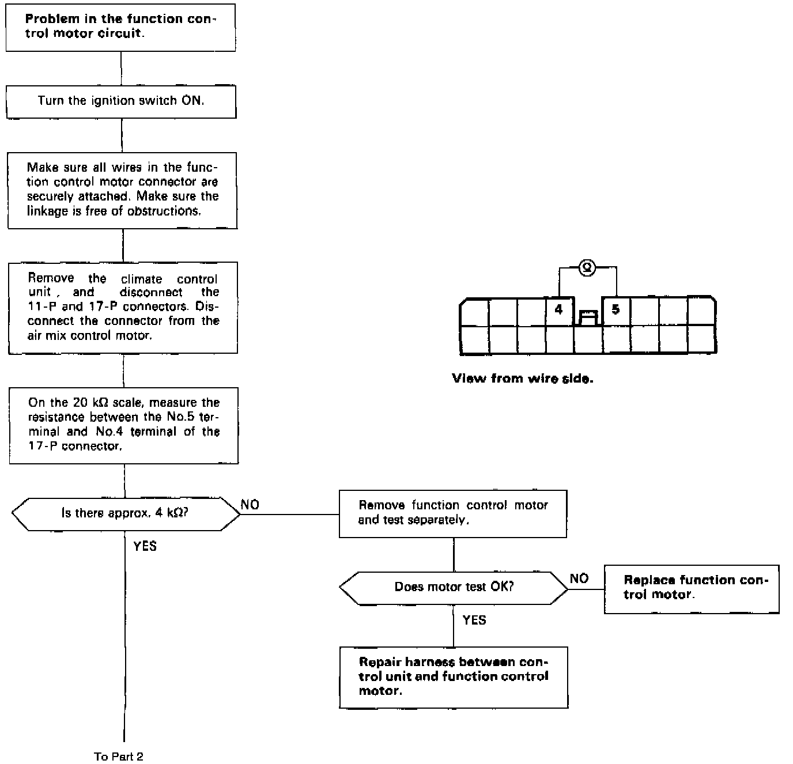
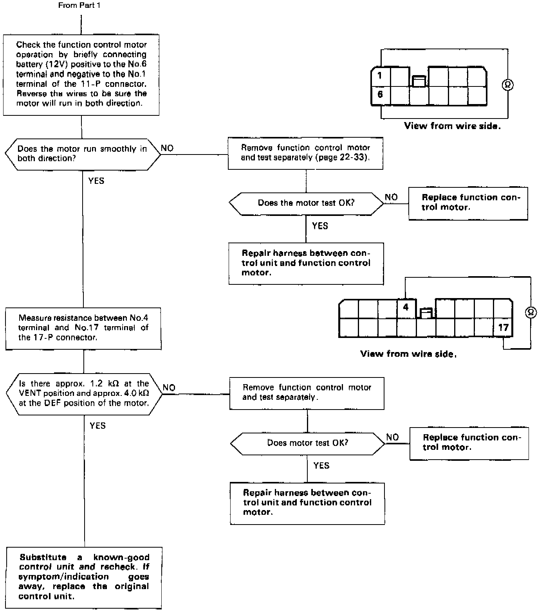

Function Control Motor - Automatic Climate Control
Self-diagnosis indicator light D comes on: Indicates a problem in the Function Control Motor Circuit.The function control motor controls the outlet air direction and volume according to output from the control unit.
NOTE: Use the digital multimeter (KS-AHM-32-003) to check.

CAUTION: Disconnect the battery as soon as the motor has stopped Failure to do so will damage the motor.
